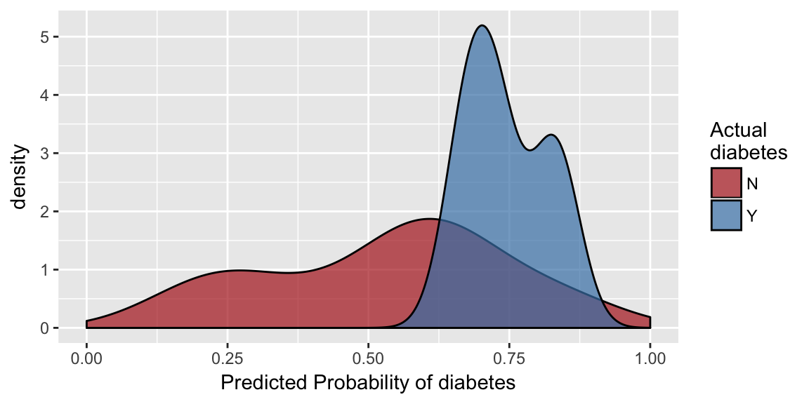

Make predictions using the best-performing model from tuning
# S3 method for model_list predict(object, newdata, prepdata, ...)
| object | model_list object, as from `tune_models` |
|---|---|
| newdata | data on which to make predictions. If missing, predictions will be made on the training data. Should have the same structure as the input to `prep_data`,`tune_models` or `train_models`. `predict` will try to figure out if the data need to be sent through `prep_data` before making predictions; this can be overriden by setting `prepdata = FALSE`, but this should rarely be needed. |
| prepdata | Logical, this should rarely be set by the user. By default, if `newdata` hasn't been prepped, it will be prepped by `prep_data` before predictions are made. Set this to TRUE to force already-prepped data through `prep_data` again, or set to FALSE to prevent `newdata` from being sent through `prep_data`. |
| ... | Unused. |
A tibble data frame: newdata with an additional column for the predictions in "predicted_TARGET" where TARGET is the name of the variable being predicted. If classification, the new column will contain predicted probabilities. The tibble will have child class "hcai_predicted_df" and attribute "model_info" that contains information about the model used to make predictions.
The model and hyperparameter values with the best out-of-fold performance in model training according to the selected metric is used to make predictions. Prepping data inside `predict` has the advantage of returning your predictions with the newdata in its original format.
# Tune models using only the first 50 rows to keep computation fast models <- machine_learn(pima_diabetes[1:50, ], outcome = diabetes)#>#>#>#># Make prediction on the next 20 rows. This uses the best-performing model from # tuning cross validation, and it also prepares the new data in the same way as # the training data was prepared. predictions <- predict(models, newdata = pima_diabetes[51:70, ])#>predictions#> #>#> # A tibble: 20 x 11 #> diabetes predicted_diabe… patient_id pregnancies plasma_glucose diastolic_bp #> * <chr> <dbl> <int> <int> <int> <int> #> 1 N 0.131 51 1 103 80 #> 2 N 0.160 52 1 101 50 #> 3 N 0.114 53 5 88 66 #> 4 Y 0.743 54 8 176 90 #> 5 N 0.816 55 7 150 66 #> 6 N 0.108 56 1 73 50 #> 7 Y 0.814 57 7 187 68 #> 8 N 0.638 58 0 100 88 #> 9 N 0.360 59 0 146 82 #> 10 N 0.540 60 0 105 64 #> 11 N 0.114 61 2 84 NA #> 12 Y 0.334 62 8 133 72 #> 13 N 0.170 63 5 44 62 #> 14 N 0.439 64 2 141 58 #> 15 Y 0.366 65 7 114 66 #> 16 N 0.139 66 5 99 74 #> 17 Y 0.316 67 0 109 88 #> 18 N 0.274 68 2 109 92 #> 19 N 0.113 69 1 95 66 #> 20 N 0.137 70 4 146 85 #> # ... with 5 more variables: skinfold <int>, insulin <int>, weight_class <chr>, #> # pedigree <dbl>, age <int>plot(predictions)